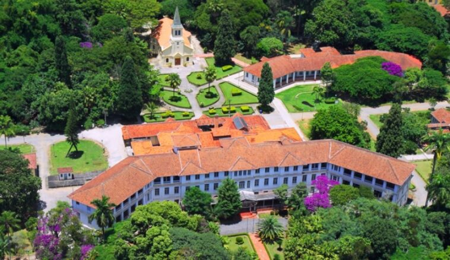
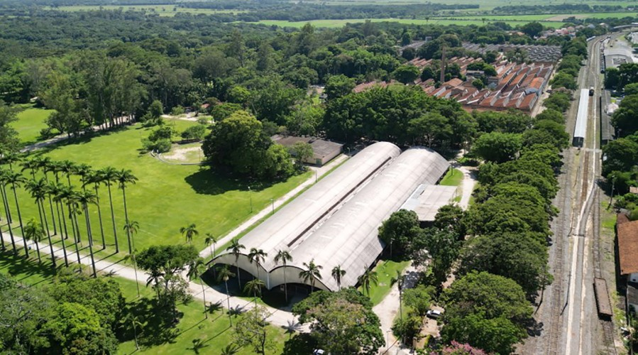
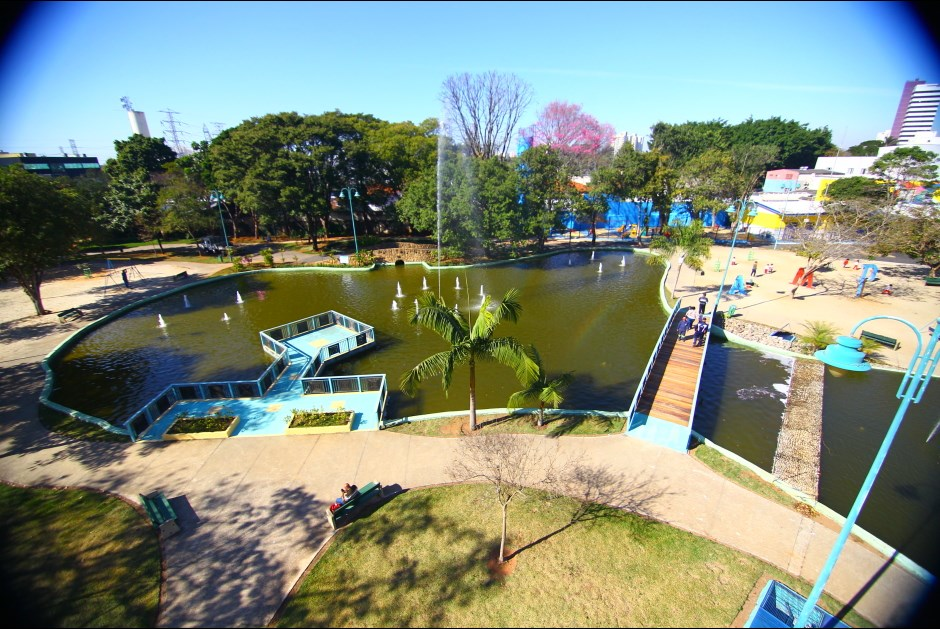

São José dos Campos
São José dos Campos é uma cidade localizada no interior de São Paulo, na região do Vale do Paraíba. É conhecida por seu desenvolvimento tecnológico, industrial e econômico, sendo um dos principais polos de inovação do Brasil.
Sua história começou no período colonial, mas seu crescimento se intensificou a partir da década de 1950, com a instalação de instituições como o ITA e o INPE. Atualmente, a cidade possui aproximadamente 729 mil habitantes e se destaca nos setores de tecnologia, indústria, comércio e pesquisa, sendo considerada uma das cidades mais importantes do estado de São Paulo.
Parque Vicentina Aranha

O Parque Vicentina Aranha é um dos principais pontos turísticos de São José dos Campos. Antigamente, funcionava como um sanatório, mas atualmente é um espaço de lazer e cultura, com áreas verdes, construções históricas e atividades para a população.
Parque da Cidade

O Parque da Cidade é um dos espaços verdes de São José dos Campos. Possui amplas áreas naturais, lagos, trilhas e espaços para atividades físicas e lazer. Também abriga a antiga residência da família Olivo Gomes, sendo um local importante para a preservação histórica e ambiental da cidade.
Parque Santos Dumont

O Parque Santos Dumont é um dos parques mais conhecidos de São José dos Campos. Possui áreas verdes, playgrounds, pistas para caminhada e espaços de lazer. Também conta com réplicas de aeronaves e foguetes, homenageando Santos Dumont e a história tecnológica da cidade.